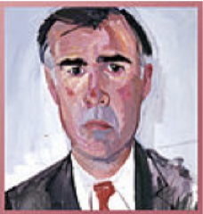
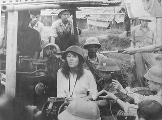
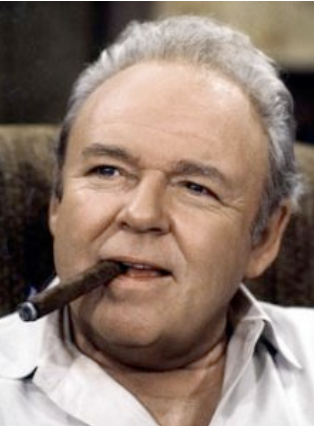
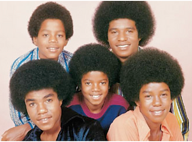
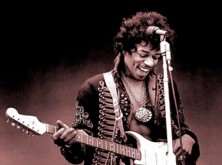
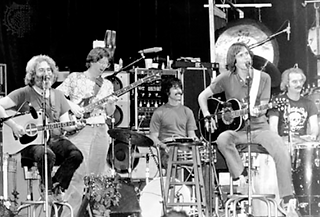
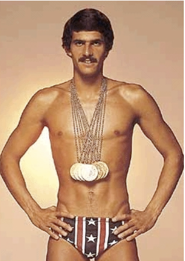
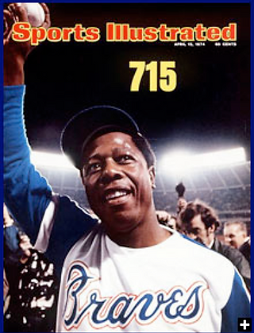
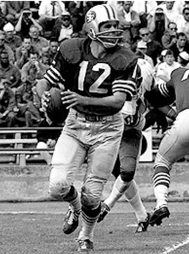

A History of the Development of the Ohlone Alternative Program 1970-76

To chronicle the development of the Ohlone Alternative Program, it is imperative to first examine the context that influenced change. The 1976 Palo Alto Unified School District’s Board of Education decision to designate the first school of choice in its history was preceded by years of intellectual, academic and emotional movement towards such a dramatic alternative and approached with a great deal of thought, caution, analysis and debate. The story begins with a look at the times and an understanding of the climate of change impacting our entire nation. Though Ohlone has maintained its alternative status for all these years, getting to this point wasn’t, nor has it been, always easy.
The Context
Political and Social Reform and...Upheaval
The ten years of the 1970s followed a ground swell of change ignited by the civil rights movement and anti-war demonstrations of the previous decade. There were organized reform movements in the Environment, Health Care, Prison Rights, Labor, Women’s Rights, the rights of Seniors (“Gray Power”), Gays, Welfare and Labor. It was a time of significant unrest and a desire for change across the United States and around the world. Richard Nixon and Gerald Ford were U.S. Presidents, Ronald Reagan and Jerry Brown were California governors, Cesar Chavez and Jessie Jackson were political activists, George Wallace was the volatile Governor of Alabama, and Vice-President Spiro Agnew was forced to resign due to charges of tax fraud, bribery, conspiracy and extortion. This monumental event was followed by an even bigger scandal in Washington D.C. with the Watergate break-in and cover-up and the eventual resignation of President Richard Nixon.
In San Francisco, George Moscone, Diane Feinstein and Art Agnos were Mayors of the city and ex-supervisor Dan White was imprisoned for assassinating Moscone and Supervisor Harvey Milk in 1978.
Significant Events
In 1970, the first Earth Day took place in April, four students were shot and killed by soldiers at Kent State University and the first Gay Pride Parade on Washington, D.C. took place. A year later, the nation’s capital was again besieged, this time by a highly populated anti-war march.
In 1973, abortion was legalized and by 1974, the country’s economy was facing the worst recession in 40 years. The U.S. ended the war with North Vietnam in 1975 when its troops were withdrawn from Saigon and 1976 marked the 200-year anniversary of the signing of the Declaration of Independence. Clashes between returning soldiers of the Vietnam War and noted peace activists like “Hanoi Jane” Fonda created a tension rarely experienced before in previous wars.
Entertainment
In the entertainment world, Jaws, The Godfather, Saturday Night Fever, Rocky and Star Wars were on the long list of several blockbuster movies. Archie Bunker, Charlie’s Angels, Sonny and Cher, Fred Sanford and Arthur “The Fonz” Fonzerelli were TV idols. Elvis Presley died and The Beatles broke up. There was soft rock, punk rock, hard rock, shock rock, funk, disco, Afros and bell-bottoms. Led Zeppelin, The Jackson 5, Fleetwood Mac, John Denver, The Eagles, ABBA, B.B. King, The Carpenters, Miles Davis, Willie Nelson and Bob Marley, among numerous others, filled the air waves and helped ease the pain caused by the self-inflicted passing of Janis Joplin, Jimi Hendrix and Jim Morrison. By the early ‘70’s, the hippie movement was alive and well in San Francisco and The Grateful Dead had been playing together for over five years.
Sports
Mark Spitz swam for seven gold medals in the Olympics in 1972 and Hammerin’ Hank Aaron hit home run number 715 in 1974. Clyde King, Wes Westrom and Joe Altobelli managed the San Francisco Giants and John Brodie was still the quarterback of the San Francisco 49ers. In basketball, it was Kareem Abdul Jabbar, Earl “The Pearl” Monroe, Dr. Julius Erving and Walt Frazier. The decade of the ‘70s was such a mix of personal triumph and defeat, national upheaval and ideological diversity, contrary lifestyles and challenges to the norm, that it gave birth to a solid foundation for systemic change that would continue to influence the nation and the world up to the present.
Education Reform

Not to be outdone, education reform was included in the paradigm shift. Vouchers and Charter Schools, Back to Basics “New Math” and Literacy Movements, Early Childhood Education and School Improvement Plans, Equal Education Opportunities and a revamping of Student Aid Programs resonated throughout educational circles effecting every district across the nation. In particular, the Open Education Reform Movement, rooted in the philosophy and practices of the British Primary system, intrigued a group of teachers and their administrator at a neighborhood school then called Ohlones Elementary School in the Palo Alto Unified School District, as early as 1970. This interest blossomed over time into a desire to achieve alternative status as a “School of Choice”.
Ohlone and the Open Education Consortium
In the seventies, there were about twenty-two neighborhood elementary schools in Palo Alto, three Junior Highs and two High Schools. [There were actually three Palo Alto high schools open throughout the 1970s: Paly, Cubberley, and Gunn. Most of the students who went to Ohlone in the 1970s, attended Cubberley, often enrolled in Cubberley's Alternative School program.] The staff at Ohlone, as diverse as any other in the district, came together wanting to change the practices they had implemented for many years. Inspired by a common interest in the philosophy and ways of teaching children outlined in the description of an Open Education classroom, the staff elected to become part of a consortium led by Virgil Howes, an educator from England and a proponent of Open Education. This three-year study began in 1971 and included a reflection on common practices and a look at other possibilities. The examination was grounded in a collection of six principles outlined in the Rights of Children and the twelve Goals of Open Education authored by Howes in his book, Informal Teaching In An Open Education Classroom, published in 1974. These Rights and Goals grew from a viewpoint best described in the first paragraph of the book’s Preface and reinforced by the Basic Tenets, Essential Characteristics and Important Support Systems of an Open Education classroom.
Informal Teaching in an Open Education Classroom

“Dramatic changes occur when school is thought of as a way of life rather than a series of programs somehow squeezed into a rigid, timetabled day.”
Basic Tenents
The thrust of this message emphasizes the importance of a positive classroom and school culture that puts students at its center. This is very aptly expressed in the Basic Tenets of Open Education which embraces the notions of respect for each child, recognition, acceptance and appreciation of each individual and the value of open-ended classroom structures (organization, management, teaching, etc.).
Essential Characteristics
Essential characteristics of an Open Education classroom include a child-centered curriculum, pupils making real choices, an emphasis on the process of learning, teachers who guide, facilitate, support, connect and question, children who explore their interests, a positive atmosphere that nurtures relationships, collaboration, creativity and supports efforts to meet personal goals.
Important Support Systems
To support these ideals, the classroom’s physical environment must be rich with a variety of materials, set up differently compared to conventional arrangements and include a less rigid daily schedule along with flexible management. A child’s ideas must be evident in their work and they must experience increased personal responsibility. Student-teacher conferences about progress, work, goals and interests must be frequent and a heterogeneous multi-age grouping of a span from two to three or more years must be a crucial part of the school structure, allowing for positive relationships to develop amongst students, teachers and parents.
The Rights of Children
These principles and reinforcements led Virgil Howes to the development of The Rights of Children and The Goals of an Open Education listed below.
Children have the right to:
practice independence and responsibility
greater freedom and self-direction
a greater share in shaping the institution of which they are a part
grow and develop in an atmosphere free from fear and manipulation, psychological and physical
explore beliefs, value and connections, as important, vital aspects of life
be involved in the process of learning, not conditioned and manipulated to respond.
These rights help to shape the individual’s feelings about himself and others. When fully implemented in the program, structure and conduct of the open classroom, these rights also contribute to the attainment of the goals of open education.
The Goals of an Open Education
Children who know themselves as persons with limitations and strengths.
Children who think independently, act responsibly and are self-propelled.
Children who use time efficiently and effectively for their own learning and living purposes.
Children who understand deeply democratic values and beliefs and apply them in daily life.
Children who show a great concern for other children, valuing the opinions of others in the solutions of problems.
Children who like themselves and feel good about themselves.
Children who use their environment and available resources well.
Children who have healthy egos that are not dependent on ot slaves to either the inner or the external worlds.
Children who like school, want to go to school and are happy in school.
Children who make more and more learning decisions and accept responsibility for them.
Children who have confidence in themselves and in their ability to confront and solve problems.
Children who know how to learn, view learning as worthwhile and think of learning as a lifelong process.
Board of Education Approval
Along with other influences, these words stood as pillars of the philosophy that influenced decisions made in the classroom and throughout the school by the staff inspired by their meaning. At the conclusion of the consortium, Ohlones teachers, represented by their principal, Jim Mathiott, approached the district and the 1976 Board of Education and requested, with recognition of their new direction, that the school now become a “school of choice”, as opposed to a neighborhood school.

The Board deliberated and agreed to designate Ohlones as an “open enrollment” school, a practice that allowed parents throughout the city to get on a waiting list to enroll their child in a school outside their neighborhood boundaries. It’s important to note that the Board did acknowledge, but not sanction, that Ohlones was embracing a philosophy and practices related to Open Education Reform principles. Perhaps to do so might imply preference. All the elementary schools in Palo Alto were already excellent schools and continue to carry that reputation today. Regardless, this was the first time ever, but not the last, the Palo Alto Unified School District supported an alternative school, a “school of choice”.
What the Ohlone Alternative Looked Like
In an attempt to humanize what was, and will always be, an institution, the Ohlones Staff implemented the following classroom and school structures and practices. Each action was intended to create an environment and school culture considered to be more accessible, nurturing and inclusive. Guided by The Rights of Children, The Goals of Open Education, The Basic Tenets, The Essential Characteristics and The Important Support Systems, the Ohlones Staff decided to institute the following features of the new school culture:
Replace report cards and the letter grade system with a minimum of two Parent and/or Parent/Student Conferences, the use of student work to assess and provide evidence of progress and End of the Year narratives that summarize and supplement the conversations experienced during the conferences and other forms of communication
Replace the use of bells to signal the beginning and ending of school and recesses with a reliance on responsible adult and student behaviors
Permission to call staff members by their first names to enhance more personal relationships
Shorten Wednesday to a minimum day to allow for time to conference (now a district-wide practice)
Reconfigure classrooms to be multi-aged, a two year span, and commit to a two year experience with the same teacher, as much as possible
Include parents as volunteers in the classroom, members on decision-making committees and active participants in the maintenance of school-wide programs (Some present-day examples include Noon Art, the Farm and the Harvest Festival, the Back to School and Spring picnics, the Core Values Committee and, of course, the PTA)
Participate in yearly Retreats designed to reaffirm understanding and dedication to the Open Education principles and practices that influenced the school reform
In addition, the classroom teachers agreed to:
Create opportunities for meaningful student choice
Conduct class meetings to discuss plans for the day, engage in discourse, solve problems and/or express personal self
Teach/learn in small groups, individually and in the large group
Acknowledge and incorporate student interest in the curriculum
Allow for movement during the day instead of always sitting in an assigned location
Form and utilize collaborative groupings
Diffuse grade level differences by referring to students as youngers and olders in the multi-age structure
Trust the students can go from Point A to Point B without walking in a single file line
Provide areas in the classroom for certain activities, such as meetings, block play, working on projects, etc.
Arrange to meet with classrooms of a different age-span for peer tutoring
Establish heterogeneous academic groups as much as possible
Embrace play as a significant learning opportunity
Lower student-to-adult ratio by including classroom aides on a daily basis
Teach to the “whole child”, intellectual/academic, emotional, social and physical
These bullet points were samples of crucial features of the new school and classroom culture fostered and expanded over the last three decades, as Ohlone sustained and maintained its alternative status. During this time, the school has weathered changes brought about by the tenure of five different principles, the coming and going of numerous teachers and the new leadership of several Superintendents and many members of the Board of Education.











